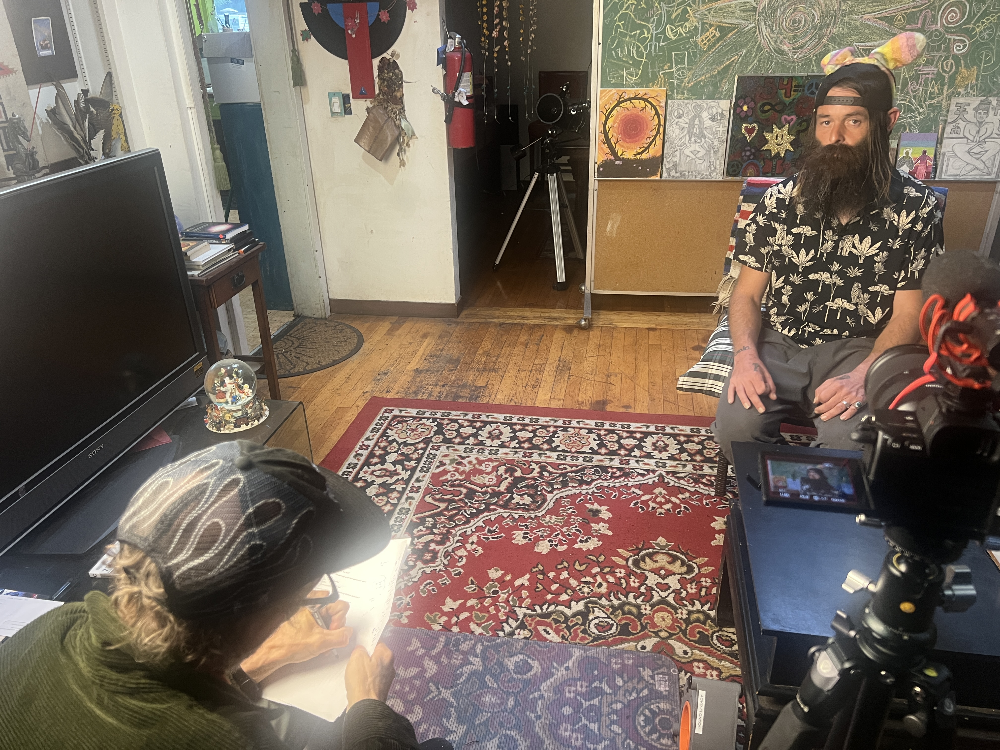
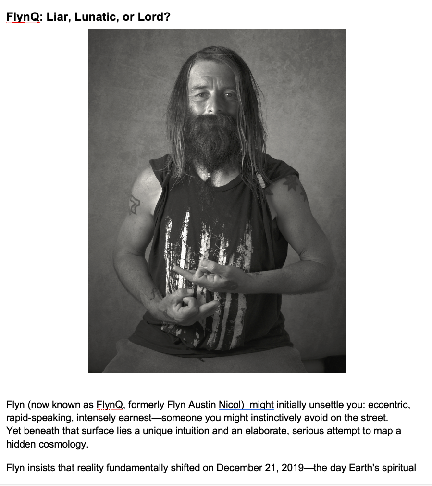
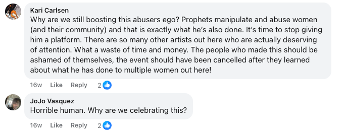
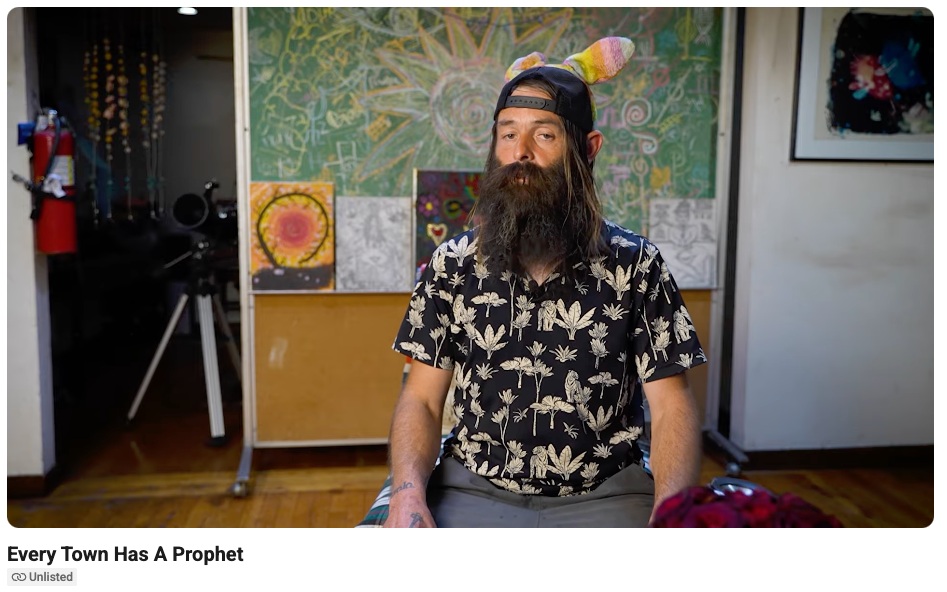
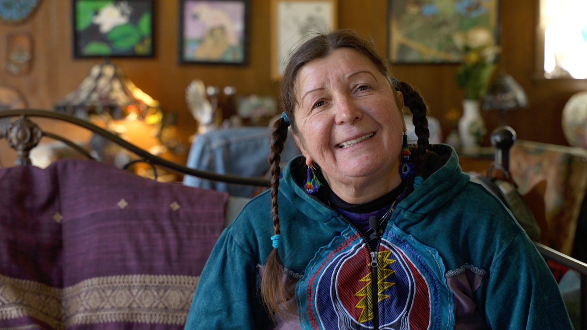
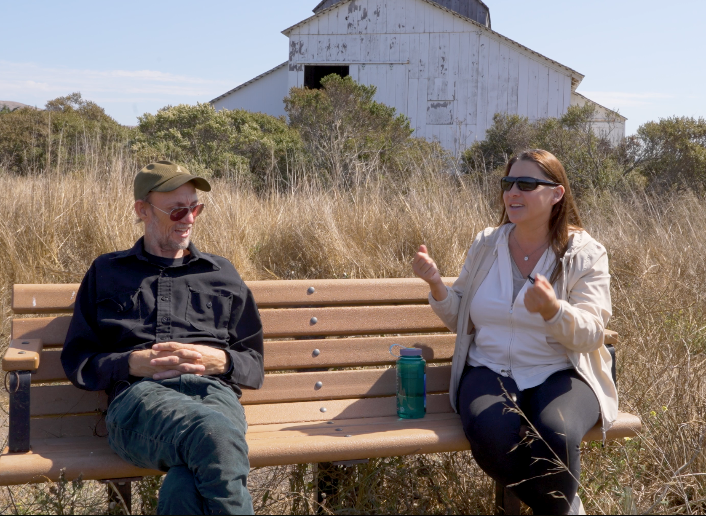
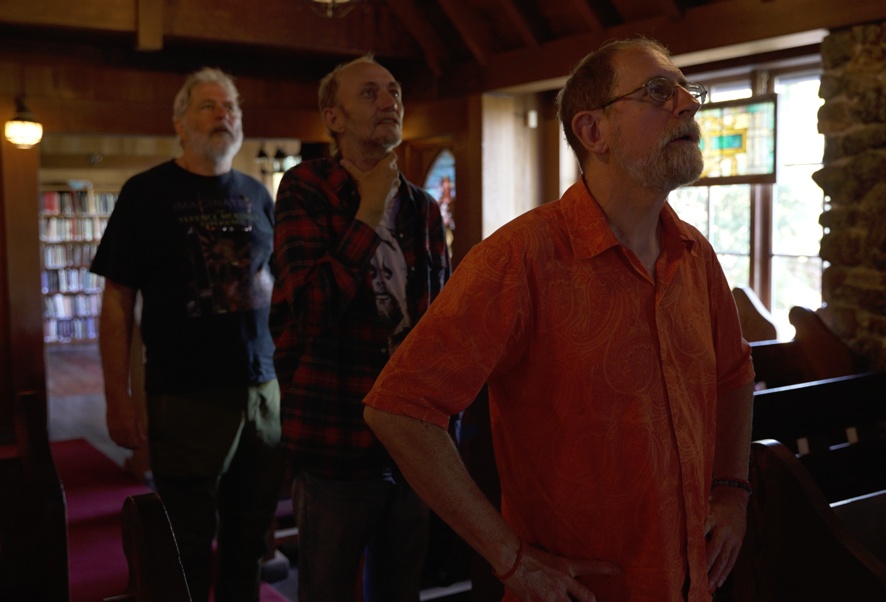
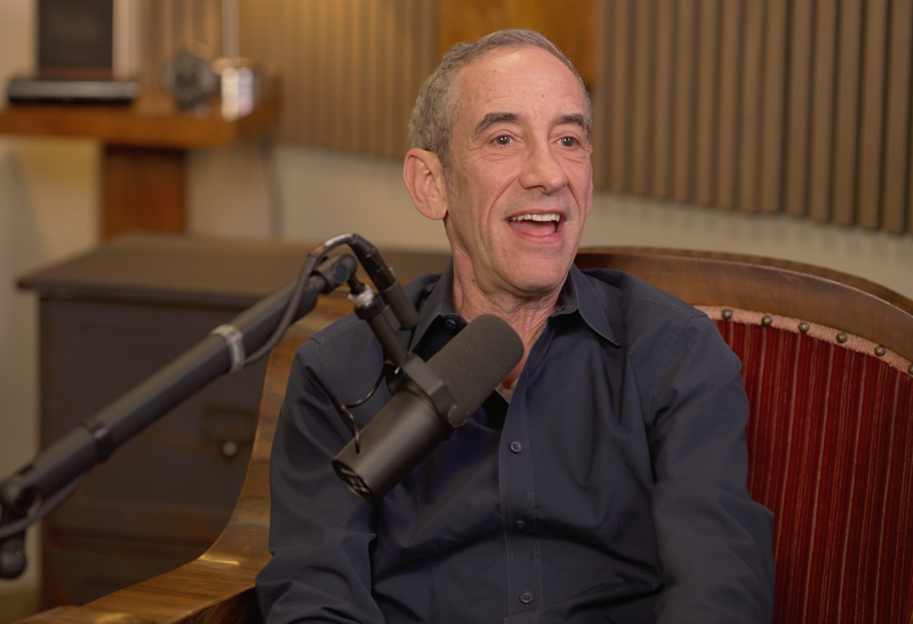
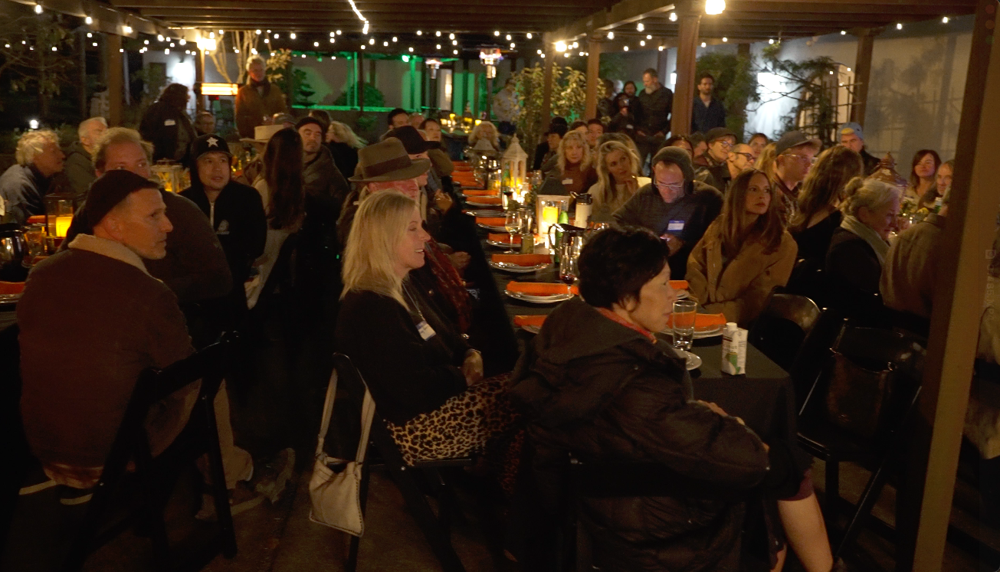
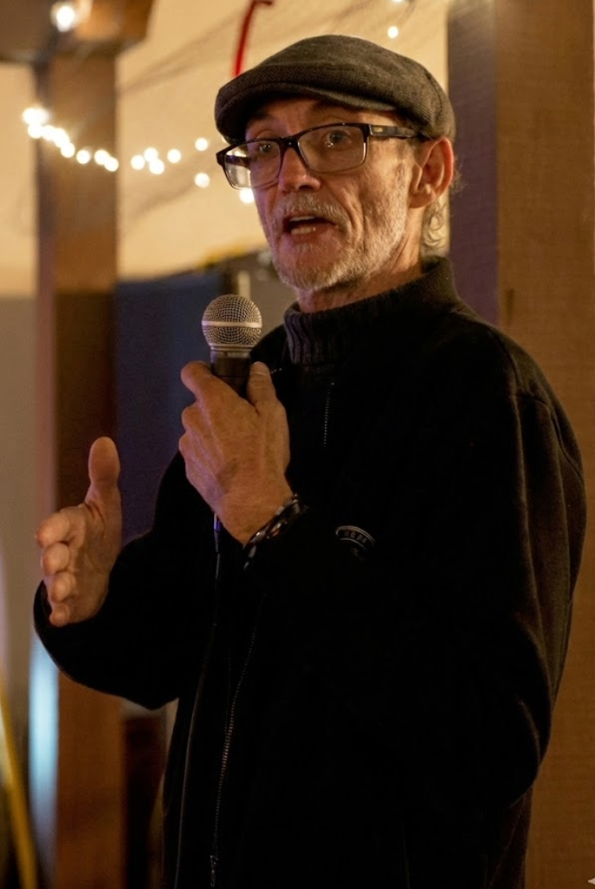

GOOD LUCK FUND & PRRIC
MEDIA PARTNERSHIP PROPOSAL
GOOD LUCK FUND & PRRIC
MEDIA PARTNERSHIP PROPOSAL
Howdy Chris,
Here's what a media partnership
with Sound Legacy looks like — and the numbers.

8 total shoot days over 9 months. 80+ editing hours. 8 revision rounds. 3 social reels. No scope, no roadmap, and the biggest public success for PRRIC to date.










